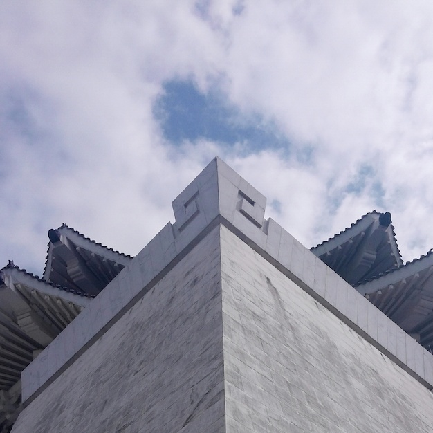
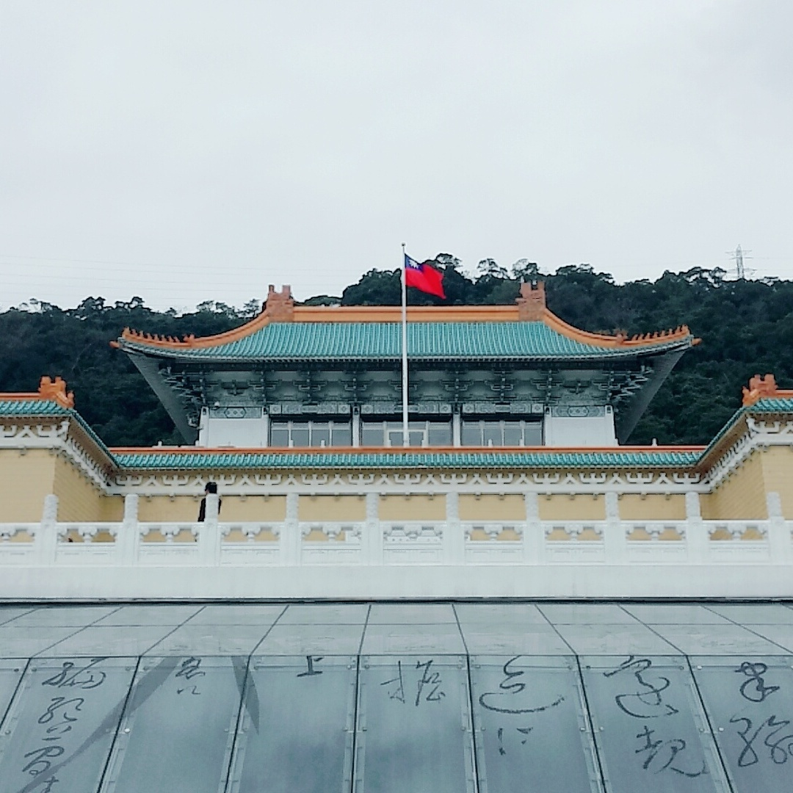
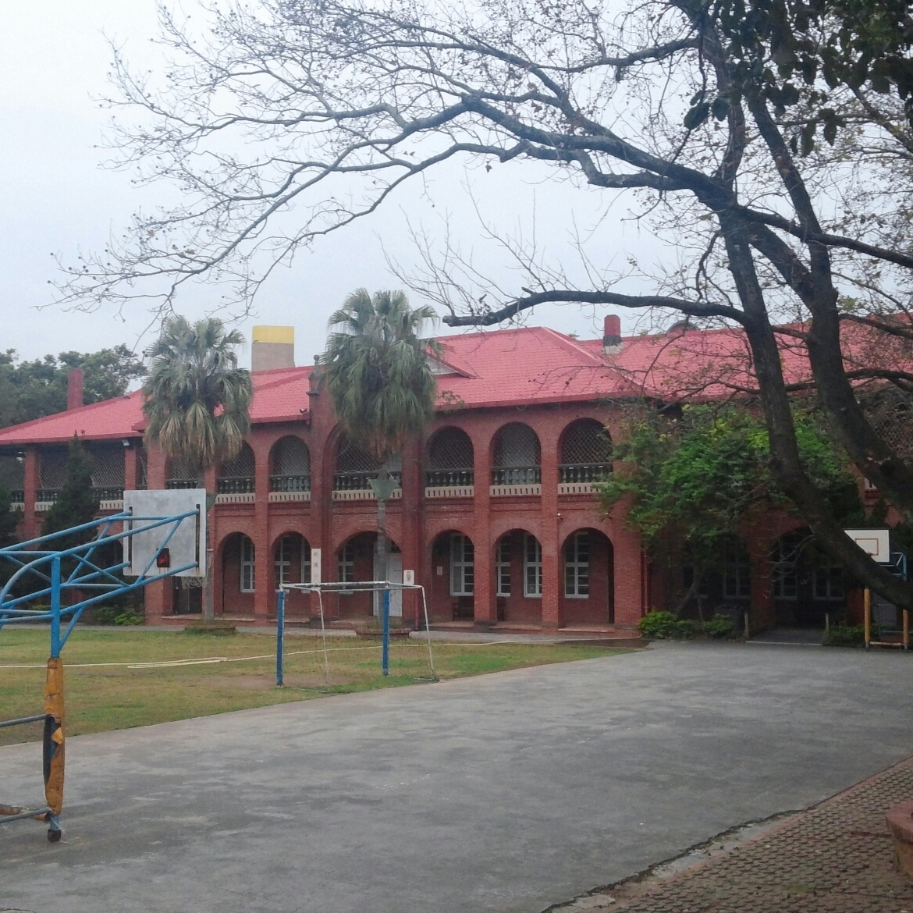

February, 20172017년 2월, 수능이 끝난후 타이페이로 여행을 떠났었습니다. 한 겨울이라는 날씨에도 불구하고 매우 습하고 더운 날씨였습니다. 수능이라는 큰 과제를 끝낸 후, 겨울의 추운 날씨가 싫어 타이페이로 떠났었습니다. 비록 혼자 떠난 여행이었지만 대만 사람들의 따뜻한 친절에 외롭진 않았습니다. |
 |
|  |
고궁박물관타이페이에서 조금 떨어져 있는곳 입니다. 70여 만점의 유물이 보존되어 있는 세계 5대 박물관 중 하나 입니다. 전시품 중 동파육과 똑같이 생긴 돌과 상아를 깎아 만든 조형품이 있었습니다. 정말 신기하고 인기가 많은 만큼 사람이 많아 구경하기 힘들었던 기억이 있습니다. |
야시장대만의 여러 야시장을 다녔습니다. 그 당시 야식에 몸이 불어가던 시절이라 길거리의 기름지고 맛있는 냄새는 저를 붙잡기 좋았습니다. 지파이, 철판요리, 대만감자등의 여러 음식들을 맛보았습니다. 비록 위생이 조금 걱정되긴 하지만 20살의 장은 아직도 돌도 씹어 먹을 수 있다고 합니다. 그 말은 틀린 것임을 다음 날 아침 깨달았습니다. |
|
|  |
말할 수 없는 비밀노을이 참 이쁜 곳입니다. 말할 수 없는 비밀은 주걸륜, 계륜미 주연의 영화입니다. 중학생때 선생님이 보여준 이 영화는 아직도 기억하고 있습니다. 대만 갔을때, 타이페이에서 멀지 않은 곳에 촬영장이 위치하고 있다 들어 가보았습니다. 촬영장이 있는 동네는 매우 한적한 동네 였습니다. 경상남도 사천시에 갔을때가 떠오르는 해안가를 낀 작고 이쁜 동네였습니다. 아직도 이때의 기분이 생각납니다. |